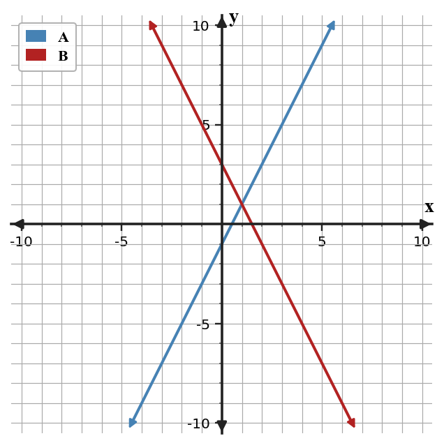

U3-S1-WTC01
A table for Relation A includes $(3,-15)$, $(4,-11)$, and $(5,-7)$. Relation B is $y=-3x+1$. Find their intersection and state what it means for the two relationships.
Before formal instruction, record one feature of the displayed representation that could help you test your conclusion.
| x | Relation A |
|---|---|
| 3 | -15 |
| 4 | -11 |
| 5 | -7 |

Teacher answer / solution
$(4,-11)$. A useful feature should be tied to the displayed graph or structure.
Set the expressions for $y$ equal or eliminate a variable. The equations meet at $x=4$ and $y=-11$, so the solution is $(4,-11)$. Substitution satisfies both equations.